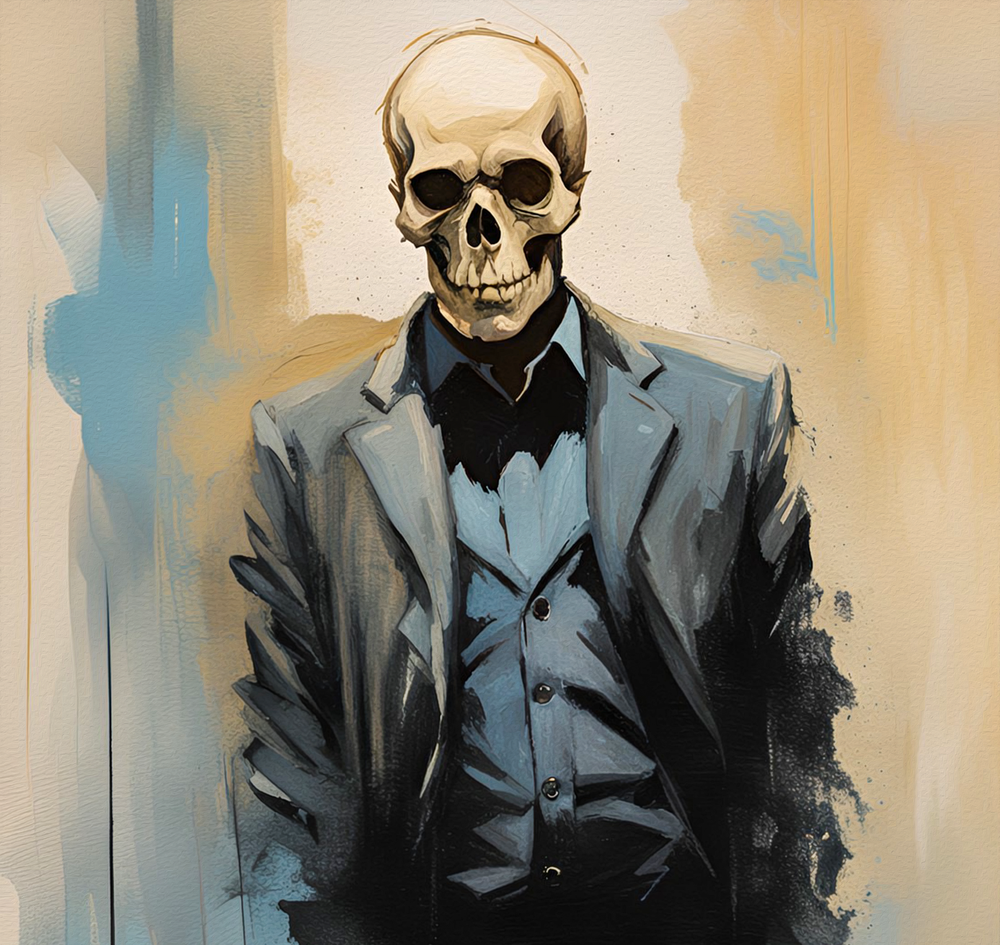

In the cafe, you are faced with sights you never thought be possible. You saw that the barista was not human, he did not have skin or flesh he was merely a skeleton. looks at you with his hollow eye sockets and merely asks “Human, I sense that there are many troubles that bother you. Would you like a chance to Explore the world of new?”
You stare ever confused and ask him to elaborate.
“A World beyond your wildest dreams but you will not return to this world. Something that would get you away from the trouble of the modern world. What will you choose? Stay here or go to another world?”